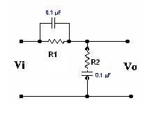

7.4.1: Title of the experiment: Frequency response of a lead-lag network
7.4.2: Aim of the experiment: To determine frequency response of a lead-lag
network
7.4.3: List of equipments:
Sl no Item Specification Quantity
1) AFO 10 Hz-1MHz/15Vrms 1
2) C R O 0-20 MHz/80Vpp 1
3) Resistors 6k, 2K 1 each
4) Capacitor 0.1 micro farad 1
7.4.4: Experimental Setup with naming of all parts:

7.4.5: Theory:
Lead compensation is basically speeds up the response and increases the stability of the system; Lag compensation improves the steady state accuracy of the system but reduces the speed of response.
If improvements in both transient response & steady state response are desired then both a lead compensator & a lag compensator may be used simultaneously. Lag –lead combines advantages of both lag & lead Compensations since lag-lead Compensator produces 2 poles & two zeros such compensation increases the order of System by 2 unless cancellation of poles & zeros occurred.
7.4.6: Design:
Vo(s) R+ 1/C2s
Vi(s) R2 +1/sC2 + R1+ sC1
----------
R1C1s+1
R1 C1 = τ1
R2 C2 = τ2
R1 R2 C1 C2= α β τ1 τ2
1 τ 0.6 x 10-3
β = ----- > 1 R1 = ---- = -------------- = 6 KΩ
α C1 0.1 x 10-6
τ 0.2x 10-3
τ = R1C1 = 0.6 msec R2 = --- = ------------ = 2 KΩ
τ = R2C2 = 0.2 msec C2 0.1x 10-6
1
f = -------------
2Π √ τ1 τ2
1
= ------------
2 Π √ 0.12 μF
= 459 Hz
= 460 Hz
α = 0.17
β = 5.83
α = 1/ β = 1
Designed Values
β =5.83
α =0.17
f=460Hz
R1=6k ohms
C1=0.1 μF
C2=0.1 μF
R2=2 KΩ
The T F for the lag –lead network is given by
Vo (s) = R2+1/sC2
------ ------------------------------
Vi (s) 1 R1+/sC1
R +---- + -------------
SC2 R1+1/s C1
Where τ =R1 C1
τ =R2C2
R1C1R2C2= α β τ1 τ2
7.4.7: Procedure:
at varying input frequencies.
7.4.8: Table of observation:
Frequency response:
Vpp= 1V (constant)
fin(Hz) |
Vo(volts) |
phase ( degrees) |
|
|
|
7.4.9: Specimen calculations: ---- Not required ------
7.4.10: Plotting of graph:
Gain Vs Frequency
Phase Vs Frequency
7.4.11: Discussion and conclusion:
Lead compensation is basically speeds up the response and increases the stability of the system. Lag compensation improves the steady state accuracy of the system but reduces the speed of the responses.
Lag-lead combines the advantage of both lag & lead compensations.